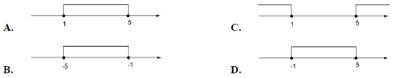
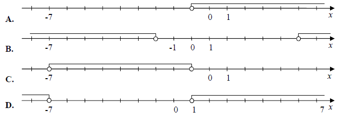
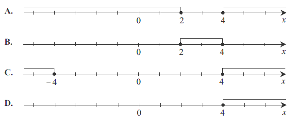
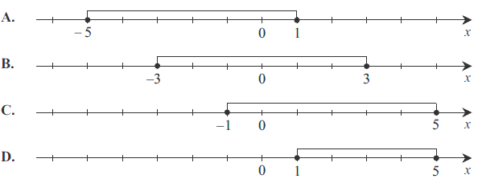
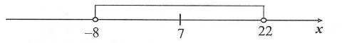
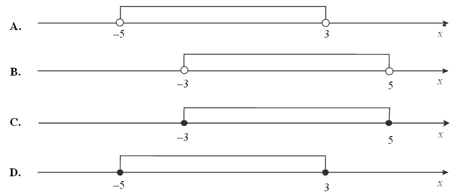

Interpretacja geometryczna wartości bezwzględnej
Wskaż rysunek, na którym jest przedstawiony zbiór rozwiązań nierówności \(|x-2| \ge 3\). 
B
Wskaż rysunek, na którym zaznaczony jest zbiór wszystkich liczb rzeczywistych
spełniających nierówność \(|x + 4| \lt 5\) 
A
Zbiór rozwiązań nierówności \(|x-3|\le 2\) przedstawiony jest na rysunku: 
A
Zbiór rozwiązań nierówności \(|x+3|>4\) jest przedstawiony na rysunku 
D
Zbiór rozwiązań nierówności \(|x - 3| \ge 1\) jest przedstawiony na rysunku 
A
Który z zaznaczonych przedziałów jest zbiorem rozwiązań nierówności \(|2 - x| \le 3\). 
C
Zaznacz na osi liczbowej punkty opisane równością \(|x +
1|=4\).
Zaznacz na osi liczbowej przedział opisany nierównością \(|x +
1| \le 4\).
Wskaż nierówność, która opisuje przedział zaznaczony na osi liczbowej. 
A.\(|x-7|\lt 15 \)
B.\(|x-7|>15 \)
C.\(|x-15|\lt 7 \)
D.\(|x-15|>7 \)
A
Przedział \(\langle -1,3 \rangle\) jest opisany nierównością
A.\( |x+1|\ge 2 \)
B.\( |x+1|\le 2 \)
C.\( |x-1|\le 2 \)
D.\( |x-1|\ge 2 \)
C
Wskaż rysunek na którym przedstawiono przedział, będący zbiorem wszystkich
rozwiązań nierówności \(-4\le x-1\le 4\). 
C (na filmiku D)
Na rysunku przedstawiony jest zbiór wszystkich liczb rzeczywistych spełniających
nierówność \(|2x-8|\le 10\).  Wynika
stąd, że
Wynika
stąd, że
Wynika
stąd, że A.\( k=2 \)
B.\( k=4 \)
C.\( k=5 \)
D.\( k=9 \)
D